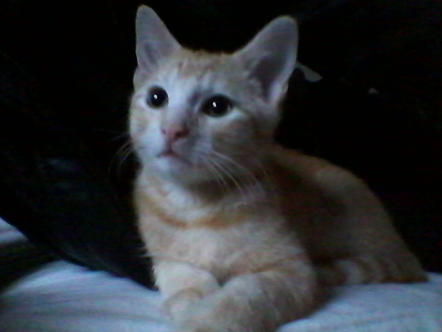
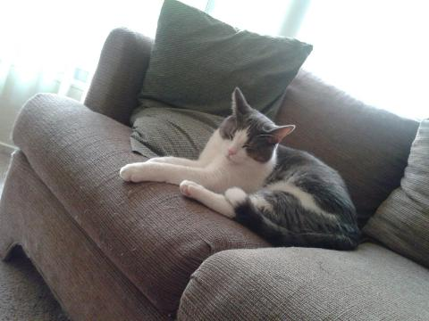
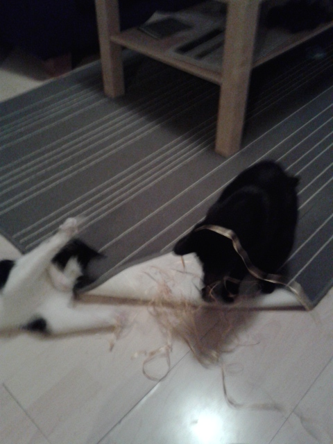
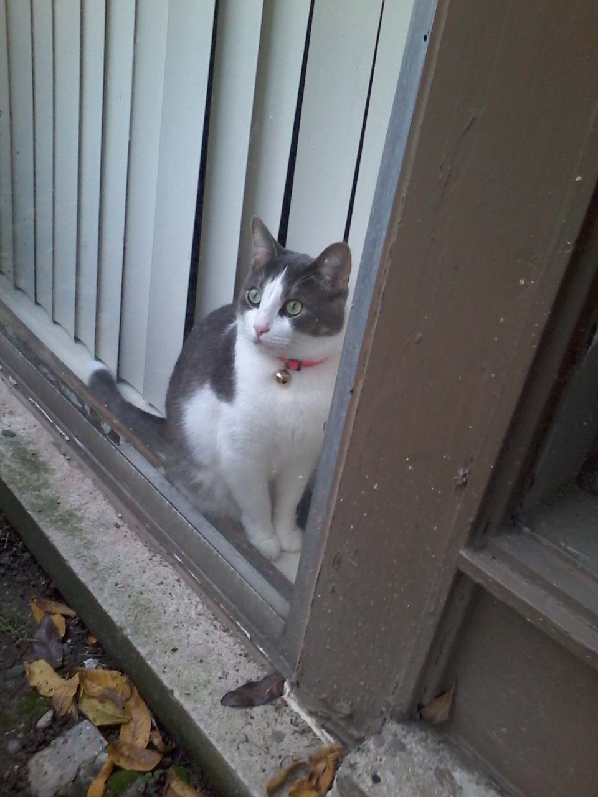

Pictures of Cats
Why cats?, you may ask. Well, I need a photo gallery on my page and there is nothing I would rather have here than photos of cats. There is no creature more graceful, more playful, more cute, and more weird than a cat. Please feel free to browse through these pictures. They are pictures of cats I have met along the way.





